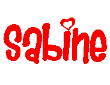
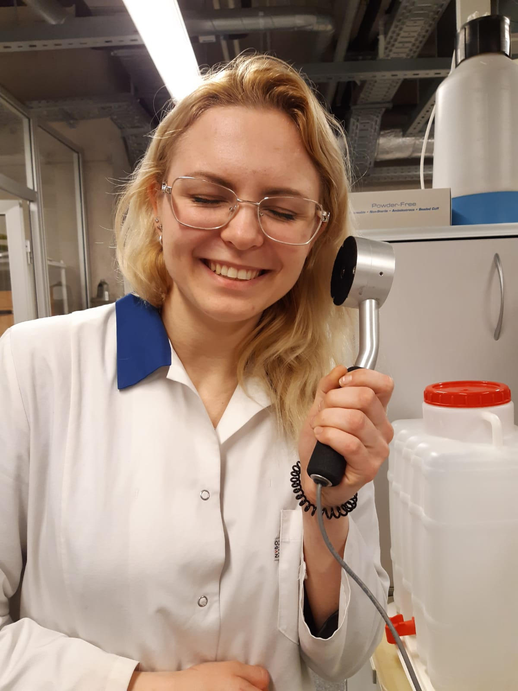
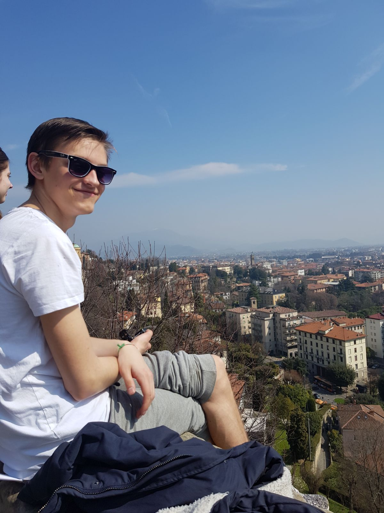

I remember the day I became aware of the Kazoo kid as it was yesterday. I have a warm feeling when I think about what made me notice him – the hairdo, I had the same hideous potato pot hairdo when I was about his age. I felt that me and this strange internet kiddo are vibing on the same level. Or maybe it was the 4 excessive classes of wine I had consumed earlier (help I’m lonely). I knew there were other similarities that made me feel like he was someone I was tied to spiritually. The crazy look in his eyes, cocky and annoying mannerisms.. Since the day I became aware of him, I have completely and fully fallen for his out-of-this-world music talent and I have swore to devote my remaining days into serving his legacy.
My name is Raitis and I joined Kazoo Kid Fan club because that lil kiddo really changed my life. When I was younger I did’t have any friends, but then I saw Kazoo Kid on tv and he said to me that he wants to be my friend, and I felt so special. So from that day on we became best friends, I still talk to him when I have a rough day
And btw I have the biggest kazzo kid underwear collection in the Baltic region.


Hi! My name is Sabine. My first real encounter with the Kazoo kid was last week (I have seen the memes but I never saw the original video). I thought the kid was hilarious and a bit eerie as well.
I believe that everyone needs at least one special friend in their lives, and the Kazoo kid is my dear special friend. Follow our progress and join our KKFC(Kazoo kid fan club), it's gonna be FUN FUN FUN FUN FUN!!!
Hello. My name is Rihards. When I was a kid, my parents fell in love with Raimonds Pauls and decided that I will have to learn playing the piano. They sent me to Music school, but all the pianos there were boring and old and I always thought to myself – who even plays the piano nowadays? Nevertheless, once I was driving to my practice in trolley No. 15 and heard some magical notes – a kid in the back was playing the Kazoo. At that moment I knew – this is the instrument that I will master. In the following years I become Best Competitive Kazoo Player in the World and recorded several singles, such as “Kazoo, let’s go to the zoo” and “If cats could play the Kazoo”. The only two persons that I must thank for my achievements are kid in the trolley No. 15 and Kazoo Kid.

Hiii friends! My name is Jane :-) when I was 13 years old I saw this kazzoo kid for the first time. I thought that it is trash. Now I understand that you can associate every single moment of your life to kazzoo kid. You can see there happiness, joy, thought full moments that creates this world. Let's build world around kazzoo 8-)